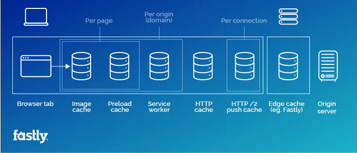
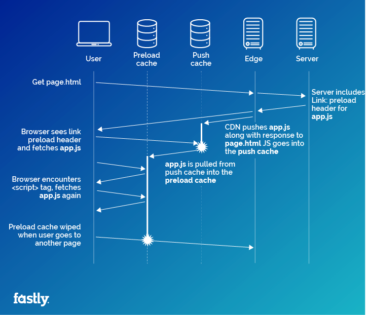

# Web Performance ### Part 1 - Caching <br> <br> <br> Steve Reiter Contact: DevEdmonton Slack
## A little about me <br> - Senior Developer at Investopedia for 2.5 years - Over 13 million unique monthly visitors - ~14,000 active sessions at peak - ~800,000,000 page views in 2017
## DotDash <br> - Online Publisher - 7 Sites and growing - ~115 million unique monthly visitors across all sites - About 9x more traffic than Investopedia alone
## SO like, we do a lot of caching
## Caching Basics
### What is a Cache? <br> - Fundamentally just a key/value pair - Anything from in-memory data structure to 3rd party services
### When should you cache? <br> - API limits or cost - Speed - Volume
## How do you use it? <br> #### Check, Fetch, Cache - Check the cache for data - Fetch the data - Cache the data
## Checking the Cache <br> - Build your data request (query, URL, etc.) - Use it as a cache key, hash if needed (Lazy) <br> **OR** - Generate an appropriate unique key - Keys must match the cardinality of your data requests
## Caching the data - After checking the cache, fetch the data as you normally would - Put the data into the cache using the same key - Add an appropriate expiry time
## How to pick a Cache Expiry - Valid cache times can range from seconds to days or weeks - Depends on how often the data changes and how frequently you need the data - Caching effectiveness is measured by hit ratio
## How does the Cache Expire - Many systems will clear items from the cache for you - Browser Cache - Content Delivery Networks - Redis - Memcache
### Want to know more about basic caching? <br> ## Caching in single page apps for fun and profit Ben Zittlau - Exchange.js May/June 2015 https://www.youtube.com/watch?v=pesvdJ2IF3Q
## Caching on the web
## Caching on the web - Browser cache - Content Deliver Networks - Backend caching (Database, API) - Client side caching API data - Response caching (Fastly/Varnish)
## The browser cache
## super brief overview of a page load <br> - Browser fetches the document - Document includes additional resources - Browser fetches and caches resources
## Example Resources <br> <pre><code><link rel="stylesheet" href="/styles/main.css?v=5.866" /></code></pre> <pre><code><script src="/js/article.js?v=5.866"></script></code></pre>
## Good example of basic caching <br> "https://i.investopedia.com/styles/main.css?v=5.866" - The URL is part of the cache key - Version parameter used to invalidate the cache when the resource changes - Also invalidates the cache in Content Deliver Networks (CDN)
## The browser cache in more detail <br> - Cross-domain (Except Safari) - Common js libraries and fonts are shared - But only if pulled from the same URL
## It's Actually multiple caches  Source: https://www.fastly.com/blog/understanding-vary-header-browser
## Response Caching
## Varnish - Reverse Proxy - Sits in front of your web server - Caches http responses from the web server - The Fastly CDN uses a fork of varnish
## Highly Configurable - Varnish Configuration Language (VCL) - Can manipulate headers before passing requests to the backend - Edge Side Includes allow for partial caching
## Cons - Easy to forget about it - New features can cause the cache to be bypassed - Example: Don't cache any set cookie response. New feature sets a cookie... in the site header. - When the cache is bypassed, the web stack is suddenly hit with a huge influx of requests
## Real World Example - We don't cache post requests, for obvious reasons - Someone finally decided to DDOS us with post requests...
#### Putting it all together 
## HTTP Headers <br> <br> Used to control caching
## Cache Control <pre><code>cache-control: max-age=2592000</code></pre> - Tells the browser how long this should be cached - Browser should use the cache item until this expires
## Cache Control <pre><code>cache-control: public</code></pre> - Indicates that this entity can be cached for all users of the browser
## Cache Control <pre><code>cache-control: private</code></pre> - Indicates that this entity should only be cached for the current user
## Cache Control <pre><code>cache-control: no-cache</code></pre> - Tells the browser to not cache this entity at all
## Entity tag <pre><code>etag: "3278c-5798abbfe3480-gzip"</code></pre> - Response header - Unique ID used to identify a specific version
## If-match <pre><code>If-Match: "3278c-5798abbfe3480-gzip"</code></pre> - Request header - Represents the entity tag of the currently cached item - Server compares this value to the ETag of the current version - Return a "304 Not Modified" status if unchanged
## Vary <pre><code>vary: Accept-Encoding</code></pre> - Response header - Sets a request header as an additional validator for this cache item - If the request header must match it's value in the request that populated the cache - Also used by CDN's and Varnish
## Problems with Vary <br> - Can't look at subfields in a header - Not terribly useful for the browser cache, things like user-agent aren't going to change
## More info on headers <br> https://developer.mozilla.org/en-US/docs/Web/HTTP/Headers - Mozilla has excellent documentation on http headers
## the future <br> Several proposals to improve cache control
## HTTP Client Hints <br> - Proposal from Google - Adds additional request headers indicating browser features/settings - Viewport-Width - Device Pixel Ratio
## Key Header <br> - Another proposal - Similar to vary but allows subfields - Won't end up with multiple cache buckets when you just want to vary on "Accept-Encoding: gzip" <pre><code>accept-encoding: gzip, deflate, br</code></pre> <pre><code>accept-encoding: gzip, br</code></pre> <pre><code>accept-encoding: gzip</code></pre>